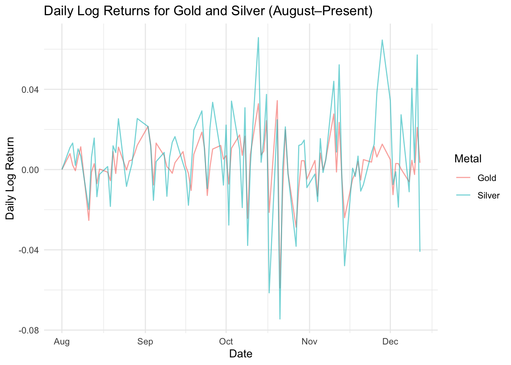
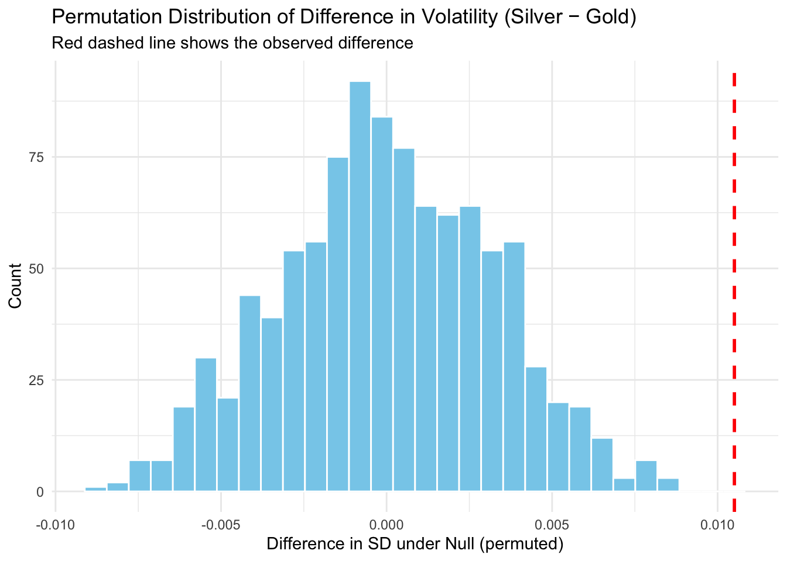

Permutation Testing: Are Silver’s Factors the same as Gold (August–October)?
Author
Josh Goldhaber
Introduction
In this project, I investigate whether there is a fundamental difference in the underlying factors driving the prices of gold and silver.
Gold and silver are both precious metals often used as investment hedges against inflation and market risk, but their price behaviors differ: gold functions more as a monetary store of value, while silver has heavy industrial demand. Silver has historically traded with higher volatility. Although, in recent months, there has been momentum in both metals due to macroeconomic uncertainty.
My analysis aims to determine if there remains a fundamental difference in the factors influencing their price volatility. By examining differences in volatility, measured by standard deviation, my permutation test seeks to reveal whether these differences provide evidence of distinct underlying market dynamics for gold and silver.
Using daily price data from Yahoo Finance (tickers GC=F for gold and SI=F for silver), I compute daily log returns and perform a one-tailed permutation test under the null hypothesis that the two metals have equal volatility.
Because financial returns are often non-normal, a permutation test is a robust, simulation-based way to test this difference without assuming normality.
Experiment Setup
We compare the standard deviations of daily log returns for gold and silver.
Null Hypothesis (H₀): Gold and Silver are driven by the same market factors and their difference in volatility can be explained by chance and randomness of markets.
Alternative Hypothesis (H₁): The underlying market dynamics for Silver lead to greater daily price variability than Gold that can’t be explained by randomness or chance.
Instead of relying on a theoretical distribution (like a t-test or F-test), we use a permutation test, which simulates what differences we’d expect purely due to chance under the null hypothesis.
We look at market volatility and price to conclude wether or not these two metals are influenced by the same factors.
Load Packages and Prepare Data
We use quantmod to pull daily futures data from Yahoo Finance and tidyverse for data wrangling. Log returns are computed using dailyReturn(..., type = "log") for stability and symmetry.
Code
library(quantmod)library(tidyverse)library(infer)library(purrr)# Download daily futures prices (August 2025 – Present)GC_F <-getSymbols("GC=F", src ="yahoo", from ="2025-08-01", to =Sys.Date(), auto.assign =FALSE)SI_F <-getSymbols("SI=F", src ="yahoo", from ="2025-08-01", to =Sys.Date(), auto.assign =FALSE)# Compute log returnsgold_ret <-dailyReturn(Cl(GC_F), type ="log")silver_ret <-dailyReturn(Cl(SI_F), type ="log")# Combine and reshape to long formatreturns_long <-tibble(date =index(gold_ret),Gold =as.numeric(gold_ret),Silver =as.numeric(silver_ret)) |>drop_na() |>pivot_longer(cols =c(Gold, Silver), names_to ="Metal", values_to ="Return")
Plot Daily Returns
This plot shows the raw time series of daily log returns for gold and silver.
It helps the reader visually compare volatility over time — wider fluctuations suggest higher variance.
Code
ggplot(returns_long, aes(x = date, y = Return, color = Metal)) +geom_line(alpha =0.6) +labs(title ="Daily Log Returns for Gold and Silver (August–Present)",x ="Date", y ="Daily Log Return",color ="Metal" ) +theme_minimal()

Analysis:
We observe that silver (in blue) exhibits more frequent and larger daily swings compared to gold.
This visual pattern suggests that silver may indeed have higher volatility — which we now test more formally.
Define Permutation Function
This function performs one simulation of the null hypothesis by randomly shuffling the Metal labels.
This breaks the link between returns and metal type, simulating a world where there is no real difference in volatility.
Code
# This function simulates one permutation of the null hypothesissimulate_diff_sd <-function(df) { df |>mutate(Metal =sample(Metal)) |>group_by(Metal) |>summarise(sd =sd(Return), .groups ="drop") |>summarise(diff_sd =diff(sd)) |>pull(diff_sd)}
Observed Difference in SD
We compute the actual observed difference in standard deviations — this is our test statistic.
A positive value means silver is more volatile than gold.
Interpretation:
This number captures how much larger silver’s return variability is, compared to gold’s.
We’ll compare this observed difference to the null distribution next.
Simulate Null Distribution
We repeat the permutation process 1000 times using map_dbl() to create a distribution of SD differences expected under the null hypothesis (i.e., if metals were equally volatile). The map_() function allows us to repeat this process smoothly and efficiently.
Code
set.seed(47)# Perform 1000 permutations under the null hypothesissim_diffs <-map_dbl(1:1000, ~simulate_diff_sd(returns_long))# Store in tibble for plottingsim_df <-tibble(diff_sd = sim_diffs)
Visualize Permutation Distribution
This histogram shows the null distribution of SD differences.
The red dashed line represents the actual observed difference.
If it’s far to the right, that provides evidence that silver is truly more volatile.
Code
ggplot(sim_df, aes(x = diff_sd)) +geom_histogram(bins =30, fill ="skyblue", color ="white") +geom_vline(xintercept = obs_diff, color ="red", linetype ="dashed", size =1) +labs(title ="Permutation Distribution of Difference in Volatility (Silver − Gold)",subtitle ="Red dashed line shows the observed difference",x ="Difference in SD under Null (permuted)",y ="Count" ) +theme_minimal()

Interpretation:
The observed value lies far in the upper tail of the distribution — suggesting that such a large difference would be very unlikely by chance if the metals were equally volatile.
Calculate One-Tailed p-value
We calculate the proportion of permuted SD differences that are greater than or equal to the observed one.
This gives a right-tailed p-value
Code
# One-tailed test: is Silver more volatile than Gold?p_val <-mean(sim_diffs >= obs_diff)cat("Observed difference in SD (Silver − Gold):", round(obs_diff, 5), "\n")
Observed difference in SD (Silver − Gold): 0.01051
Interpretation:
A very small p-value implies that the observed volatility difference is unlikely under the null —
we have statistical evidence to reject the null hypothesis and conclude that there is in fact a difference in factors driving silver’s volatility and price, that can’t be explained by market randommness or chance.
Simulation: Type I Error Rate of the Permutation Test
We now simulate a world where gold and silver have the same true volatility, and check how often our permutation test falsely rejects the null.
This helps us assess how well the test controls the Type I error rate.
Interpretation:
This number tells us how often the permutation test incorrectly rejects H₀ when there is no true difference.
While it differs depending on the seed, 47 gives us .05. The test is behaving well, giving us a Type I Error only .05 of the time If much higher or lower, it may be too liberal or conservative under certain conditions.
Simulation: Type II Error Rate of the Permutation Test
We now simulate a world where gold and silver have different true volatilities, and check how often our permutation test fails to reject the null.
This helps us assess the Type II error rate — the probability of failing to detect a true difference.
Interpretation:
This number tells us that the permutation test fails to reject H₀ 69% of the time when there is in fact a true difference in volatility (with a true difference of 0.2 in standard deviations).
An 69% Type II error rate indicates that the test has low power under these conditions. This could be due to factors such as:
Small sample size (n = 30): With limited data, it becomes harder to detect subtle differences.
Subtle true difference (true_diff = 0.2): The actual difference in volatility may not be large enough to be consistently detected.
Number of repetitions (reps = 20): Increasing the number of repetitions could provide a more reliable estimate of the error rate.
To reduce the Type II error rate and increase the power of the test, one could:
Increase the sample size (n).
Increase the number of permutations (perms).
Use a larger true difference (true_diff) to simulate more pronounced effects.
Final Conclusion
This simulation-based test supports the claim that silver exhibits greater daily price variability than gold from August to October 2025. This difference in volatility, measured by standard deviation, provides evidence of distinct underlying factors driving the prices of these metals.
Given the industrial use of silver and its smaller market size, this result aligns with economic intuition: silver’s price tends to react more sharply to both macroeconomic shocks and commodity supply disruptions.
The one-tailed permutation test not only confirms this difference but does so without relying on normality assumptions, making it a robust method for comparing volatility in real-world financial data.